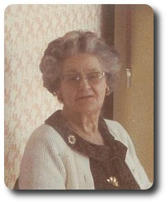
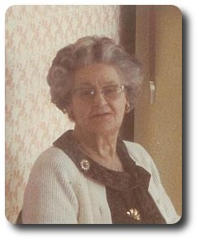
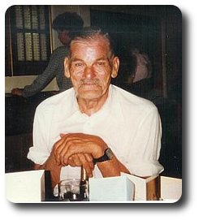
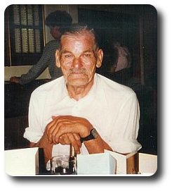

1880 birth date estimated from her marriage certificate
1881 census: (1) still looking, from marriage certificate there might be her father Thomas employed as an Iron Moulder
1891 census: (11) still looking, from marriage certificate there might be her father Thomas employed as an Iron Moulder
1900.09.22 (20) her first child Alice Latham is born, ( unconfirmed date, a birth certificate has not yet been located )
1901 census: (21) still looking, might expect to find a one year old Alice with her at this point
1904.12.09 (24) her second child Edward Latham is born in Epsom, Surrey, England in the Union Infirmary, Epsom, certificate says mother was a laundress, no father on certificate
1905.09.02 (25) married in Epsom, Surrey, England ( Sep 1905, Epsom, v.2a, pg.78 )
| 1905. Marriage solomnized at The Register Office in the District of Epsom in the County of Surrey | |||||||
| When Married | Name and Surname | Age | Condition | Profession | Residence | Father's Name | Profession of Father |
| Second September 1905 | Edward Pallant | 29 | Bachelor | Builder's Labourer | 9 Hook Road Epsom | William Pallant (deceased) | General Labourer |
| Alice Elizabeth Latham | 25 | Spinster | Laundress | 6 Hook Road Epsom | Thomas Latham | Iron Moulder ? | |
| Married in the Register Office by Certificate before me | Chas B A Williams, Registrar; E. Field Course, Deputy Superintendent Registrar | ||||||
| This Marriage was solemnized between us | Edward Pallant | in the Presence of us | Gertrude Amelia Pallant | ||||
| Alice Elizabeth Latham | Alick G. Ebbutt | ||||||
1881 census: (5) looks like a match in Farnham, Suffolk, England
1891 census: (15) check UK Census
1901 census: (25) check UK Census
1911 census: Pallant, Edward, 1877 (34), Plomesgate, Suffolk with Violet (3) and William (1)
1911 (35) Edward married Mrs. Mary A. Hill (formerly Mary Ann E. Gooding) ( unconfirmed - Jun 1911, Plomesgate, v. 4a, pg.2102 ) (5 children of her own at this point (including Percy Hill, Agnes Hill and Doris Hill) from a previous marriage to Earnest William Hill ( Dec 1895 Plomesgate, v. 4a, pg.1797 ), as of 1914 there were 2 more (Ruby Pallant and Ethel Pallant) )
1906.06.24 (26) her third child Albert Pallant is born in Epsom, Surrey, England ( Sep 1906, Epsom, v.2a, pg.9 )
1908.04.14 (28) her fourth child Violet Pallant is born in Wandsworth, London, England at 77 Swaffield Road (a Workhouse with a casual ward), she had been living at 34 Red Lion Street. ( Jun 1908, Wandsworth, v.1d, pg.726 )
1909.07 (29) her fifth child William Pallant is born ( haven't located birth registration yet )
1909.09.13 (29) Alice dies in the Union Infirmary, St. Johns Hill, London, England ( Sep 1909, 29, Wandsworth, v.1d, pg.250 )
| REGISTRATION DISTRICT Wandsworth | |||||||
| 1909. DEATH in the Sub-district of South West Battersea in the County of London | |||||||
| When and Where Died | Name and Surname | Sex | Age | Occupation | Cause of Death | Informant | When Registered |
| Thirteenth September 1909 Union Infirmary St. John's Hill | Alice Pallant | Female | 29 Years | wife of Edward Pallant, a General Labourer of 25 Brathway Rd. Wandsworth | Bright's Disease - parturition, uraemic convulsions ) | J. Breward Neal Superindendant, Union Infirmary, Battersea | Seventeenth September 1909 |


 



 

{kind=link}
{kind=link}
{kind=link}
{kind=link}
{kind=link}